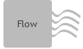
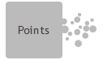
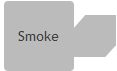
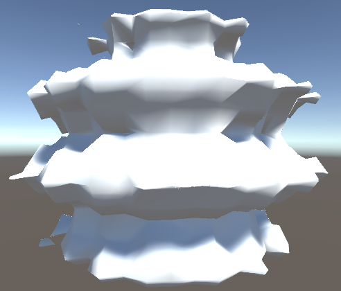
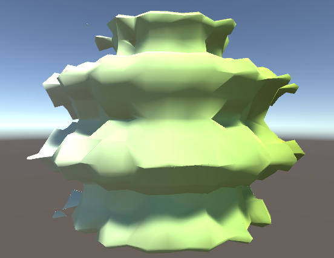

Key Data
For data visualizations that have a spatial structure, the geometric structure itself is a critical part of the data. In fact, access to individual data variables is usually "keyed" off these geometric structures. You can't ask, "What is the average temperature at _", without filling in the blank with some geometric identifier. There are some choices; we could fill in the blank with a point, a line, a surface, or a volume in space, but we need something to act as that structure upon which the data variables are defined. We call this geometric structure the "key data".
Key Data Types
Key data are the "building blocks" upon which visualizations are created. ABR currently supports four types of key data:
| Surfaces | Lines | Points | Volumes |
|---|---|---|---|
 |
 |  |  |
Every key data has its own geometric structure and variables applied to it. You can think of the Key Data as the "canvas" upon which the variables are painted, for example, this visualization of a wavelet is a surface key data object representing the wavy blob surface: 
Then, we can "paint" a visualization on these geometric data by pairing one of the key data's scalar variables (in this case, the X Axis) with a colormap (in this case, a white to green linear map): 
Key Data Identification
Every key data object is identified by a "Data Path" string comprised of 4 parts:
<Organization>/<Dataset>/KeyData/<KeyDataName>
- Organization: The governing body that owns the dataset, for example "TACC", "UMN", "Brown", etc.
- Dataset: A label for the dataset the key data is a part of, for example "GulfOfMexico".
- KeyDataName: The label for this particular key data object, for example "NitrateSampling".
All in all, for a nitrate point sampling from the Gulf of Mexico, we might end up with a data path string like:
E3SM/GulfOfMexico/KeyData/NitrateSampling
Using Key Data in Code
In scripting, we can obtain an ABR KeyData object by importing some data into ABR. The key data object has some variables. For example, to get a KeyData object from a RawDataset (more on this later) and list its scalar variables, we might write some C# code like this:
string keyDataName = "E3SM/GulfOfMexico/KeyData/NitrateSampling";
KeyData kd = ABREngine.Instance.Data.ImportRawDataset(keyDataName, nitrateRawData);
foreach (ScalarDataVariable s in kd.GetScalarVariables())
{
Debug.Log(s);
}
// Would print out something like "Temperature, Salinity, ..."
Check out the KeyData and DataManager classes for more examples and further documentation, and be sure to also look at the Creating a C# ABR Visualization tutorial.